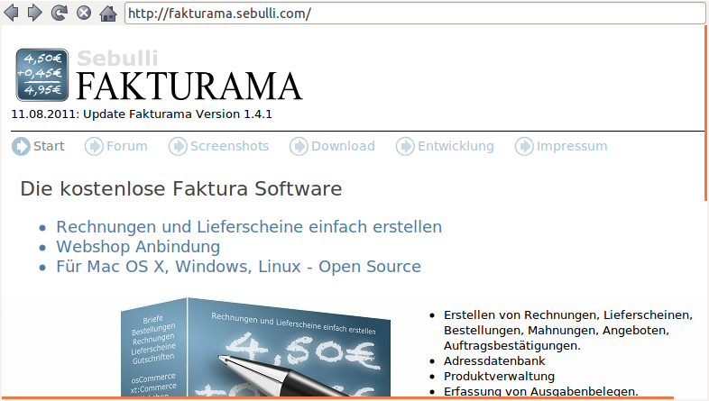
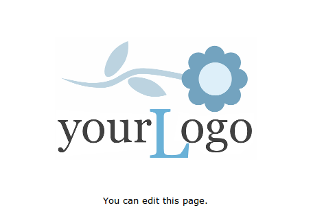

Öffnet die Fakturama Projektseite in einem Browserfenster.
Beim Programmstart wird ebenfalls eine Webseite geöffnet.
Diese kann frei gewählt werden. Eine Seite im Internet, eine lokale Datei oder ein Bild. Zum Beispiel das eigene Firmenlogo.
Siehe URL der Startseite.